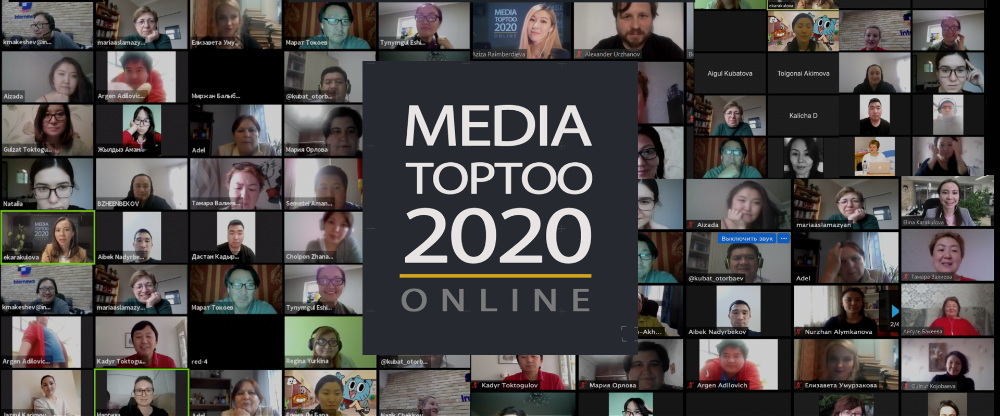
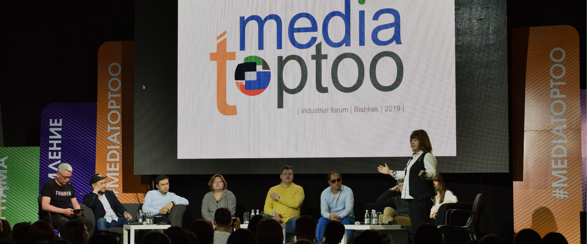

- 
- 
Media TopToo
Industrial
Forum 2020

Media TopToo
Industrial
Forum 2020


РЕГИСТРАЦИЯ ЗАКРЫТА
- :
дней
часов
минут
секунд
- проводим форум в онлайн формате
- чтобы вместе с профессионалами медиасферы найти выход
- и помочь СМИ всех форматов адаптироваться к новым условиям


- пройдите онлайн регистрацию;
- регистрация закрывается 22 апреля 12:00 часов дня по бишкекскому времени;
- 23 апреля прошедшие отбор получат уведомление о регистрации и инструкцию по платформе ZOOM по указанному в форме регистрации адресу;
- участники форума, прошедшие отбор, с 25 по 29 апреля ежедневно накануне сессии будут получать приглашения на свой электронный адрес;
- в приглашении – уведомлении вы найдете уникальную ссылку, код и пароль на выбранную сессию дня, а также инструкцию по платформе ZOOM;
- не попавшим по разным причинам на онлайн-форум, будет доступна ежедневная прямая трансляция на странице Internews in Kyrgyzstan в сети Facebook;
- видеозаписи всех выступлений с титрами на кыргызском языке будут доступны в разделе «Презентации» и на YouTube-канале Интерньюс в КР после форума.
«Стремление» – ежегодный конкурс в сфере профессиональной
журналистики Кыргызстана, организованный Интерньюс.
Номинации «Стремление-2020»:
Власть и общество.
Охрана детства.
Мир и согласие.
Культура и просвещение.
Время помогать.
Человек действующий.
Признание коллег за приверженность теме защиты прав человека
(специальная номинация конкурса).
В этом году Представительство Интерньюс в КР учредило специальный приз «Памяти Таиржана Турсуналиева» за большой вклад в развитие региональной журналистики.
Церемония награждения победителей «Стремление-2020»
состоится после отмены карантина по COVID19.
О времени и месте сообщим дополнительно.
Ожидаются интерактивные сессии!


Арсений Ашомко

Совладелец рекламного агентства «ВИНОУ».
Один из самых опытных спикеров digital- и медиарынка, сооснователь и режиссер конференций MEH (Marketing, Edutainment, Humor), «МЕХиКо», студии публичных выступлений и презентаций «Спасибо, очень интересно!»
На рынке Social Media с 2009 года.
Первый кейс – интеграция банка «УРАЛСИБ» в игру «Счастливый фермер».
Работал в рамках Socialist Group с Pepsi, Dirol, NIVEA, UniCredit Bank, Raffaello и многими другими в качестве креативного директора, стратега и на различных других позициях.
С весны 2014-го возглавлял tigermilk – мультиканальную медиакомпанию с десятком тематических проектов (Bon Appétit, Workout, «Шпильки», «Якорь», «Любящие мамы», «Шедевры рекламы» и т. д.) и 45 млн участников на 10 платформах (от социальных сетей до мобильных приложений).
С весны 2018 года по лето 2019-го был директором по развитию медиапродуктов «ВКонтакте».
Родион Скрябин

CEO в КБ «Палиндром», директор по развитию и советник в изданиях «Лайфхакер» и Burning Hut.
Один из самых приятных спикеров в digital и медиа, идеолог и визионер конференций MEH (Marketing, Edutainment, Humor) и открытых микрофонов «МЕХиКо», сооснователь студии публичных выступлений и презентаций «Спасибо, очень интересно!»
До 2013-го в Оренбурге работал редактором печатных изданий и интернет-редакций, был автором сценариев для радио и ТВ, занимался менеджментом медиапроектов.
В 2013-2015 годах возглавлял видеопродакшн в «Нетология-групп» (образовательные проекты «Нетология» и «Фоксфорд»), создал канал «Нетология ТВ», занимался созданием видеокурсов и организацией вебинаров. Преподавал на курсах по SMM и контент-маркетингу в университете «Нетология».
В 2015-2017 годах – сооснователь и исполнительный директор компании «Лаборатория новых медиа», где занимался созданием тематических медиа и их монетизацией с помощью нативной рекламы в видеоформате.
В 2017-м пришел директором по развитию в «Лайфхакер» (30 млн уникальных посетителей на страницах издания в 2020 году).
С 2020-го – сооснователь и CEO в КБ «Палиндром».
Дмитрий Голубовский

Работал рерайтером в «Коммерсанте» (2001-2005), редактором, а затем главным редактором журнала Esquire (2005-2014).
В просветительском проекте Arzamas возглавлял департамент стикеров и эмодзи и помогал запускать приложение «Радио Arzamas» (и остается его регулярным автором).
Сейчас главный редактор Bookmate Originals и консультант «Яндекс.Музыки» и голосового помощника Алисы.
Регина Юркина

С 2011 года по настоящее время – генеральный директор ООО «МедиаБренд» (Москва) – конференции и конкурсы, посвященные вопросам маркетинга, дизайна и промоушена СМИ (mediabrand.me). Автор идеи и учредитель.
С 2016-го – заместитель генерального директора Национальной ассоциации телерадиовещателей (НАТ) под председательством Эдуарда Сагалаева.
С 2017 года – старший преподаватель факультета медиакоммуникаций ВШЭ. Авторский курс «Медиабрендинг». Один из авторов учебника «Продюсирование на ТВ».
Специализируется в области стратегического маркетинга медиа (ТВ и digital), занимается брендингом, продвижением и дизайном, а также программированием ТВ-эфира.
Дина Маслова

Журналистка, учредитель сайтов kaktus.media и kaktakto.com
В 2006 году начала работать корреспондентом газеты «Вечерний Бишкек», с января 2008 года — специальным корреспондентом.
В 2009 году заняла должность экономического обозревателя, а осенью 2011 года возглавила интернет-редакцию газеты.
С 2012 по 2017 гг. являлась президентом и одной из организаторов международного фестиваля рекламы «Red Jolbors Fest».
Выступает с докладами на медиа-семинарах для журналистов Кыргызстана и стран СНГ.
Александр Уржанов

Генеральный директор.
Начинал на телеканале RTVI, когда это еще не было модным и там работал Евгений Киселев.
Работал шеф-редактором программ «Центральное телевидение» на НТВ и «Парфенов» на «Дожде», директором видеодепартамента проекта Arzamas и креативным продюсером канала «РБК».
Одновременно продюсировал документальные фильмы, такие как «Комитет» о матерях Беслана, «На кончиках пальцев» о больной синдромом бабочки Наде Кузнецовой.
Жайнак Усен уулу

С марта 2019 года возглавляет Общественную телерадиокорпорацию (КТРК).
Является основателем и председателем правления Ассоциации телерадиоорганизаций КР.
С 2018-го – член попечительского совета Кыргызского национального университета имени Жусупа Баласагына. До КТРК четыре года возглавлял ТРК «НТС», а также ОсОО «Цифровые технологии», оператор цифрового вещания.
Имеет многолетний опыт работы в финансовой сфере, руководил международной финансовой компанией, работающей в нескольких странах Евразии и Африки.
Образование: окончил КГНУ и изучал стратегическое управление (MBA) в Московской международной высшей школе бизнеса (МИРБИС).
Жанна Шегай

Советник по кросс-функциональному управлению организациями, специалист проекта «Медиа-К» Интерньюс в КР по стратегическому управлению и менеджменту.
Имеет 15+ опыта с глобальными и локальными брендами в различных сегментах - от премиума до тех, кто живет за чертой бедности.
Строит организационные мосты между маркетингом финансами, стратегией, продажами.
Магистр по управлению бизнесом в среде различных культур.
Елена Нечаева

Журналист, продюсер, шеф-редактор информационной службы телеканала, ведущая, автор документальных фильмов, блогер. Одна из руководителей нового медиа «Апрель-ТВ».
После последней смены власти в Кыргызстане ушла с государственного телеканала и приняла участие в создании и развитии частного канала – «Апрель». После того, как власти лишили быстро растущий телеканал возможности выходить в эфир, «Апрель» начал развивать онлайн-присутствие. И стал осуществлять свою редакционную политику в формате нового медиа.
Как одному из лидеров, Елене пришлось вместе с командой полностью перестраивать работу канала, изучать алгоритмы интернет-платформ, обучаться аналитике. За короткое время команда «Апреля» полностью перестроилась под новый формат. В том числе, изменения произошли и с точки зрения менеджмента. Канал развивает продакшн-направление, а именно производство видеоконтента на коммерческой основе, чтобы иметь возможность обеспечивать себя.
Осенью 2019 года начала пробовать себя в качестве блогера. YouTube канал ЧерныйЯщикБелыйШум за несколько месяцев собрала более 10 тыс. подписчиков и 0,5 млн зрителей.
С тех пор, канал Апрель создал еще 3 блога по разным тематикам. Основная цель на сегодня - способствовать укреплению свободы слова в Кыргызстане путем развития независимых, качественных новых медиа в Кыргызстане, в том числе отдельных блогеров.
Имеет многолетний опыт работы в финансовой сфере, руководил международной финансовой компанией, работающей в нескольких странах Евразии и Африки.
Окончила КГНУ и изучал стратегическое управление (MBA) в Московской международной высшей школе бизнеса (МИРБИС).
Махинур Ниязова

Известный в Кыргызстане журналист и блогер
Ранее была главным редактором портала Knews.kg. Известна по резонансным публикациям в газетах «Дело №…», «Комсомольская правда в Кыргызстане» и «Аргументы и факты в Кыргызстане».
В настоящее время она замредактора в ИА «24.kg», одновременно работает с платформой factcheck.kg.
Готова делиться своими историями успеха, годовой биллинг которых составил свыше $5 млн, а также опытом в проектах, которые ускорили ее личностный рост, проходивший с серьезным «болевым» эффектом.
Оксана Крюкова

Получила образование в сфере гостиничного бизнеса, проработала три года в отеле «Хайятт» в отделе размещения.
Затем ушла в НКО и занималась организацией мероприятий и закупками.
Попробовала пройти кастинг на утреннее шоу «Включи настроение» и прошла.
С тех пор попробовала себя в авторском кинопроекте «Первый показ», шоу прямого эфира «Вечер трудного дня», шоу о путешествиях «Кикс Трэвел» и литературном подкасте «Между строк».
Асхат Табалдиев

Генеральный продюсер 1.1 STUDIO
Резидент знаменитой команды КВН «Азия MIX». В настоящее время руководит известной продакшн-студией, выпускающей рекламные ролики, телесериалы, скетч-проекты, полнометражные фильмы.
Один из создателей популярного юмористического шоу «Жарайт City». Известен как один из постановщиков комедии «Биртууганчик» и продюсер фильма «Ванчопа».
Илим Карыпбеков

Гендиректор «ТНТ – Кыргызстан», блогер
Известен как менеджер и эксперт в области телевидения в Кыргызстане. Работал медиапредставителем КР, заместителем гендиректора ЗАО «Альфа Телеком» (MegaCom), исполнительным директором ОАО «Международный аэропорт «Манас».
Осенью 2013 года был избран председателем наблюдательного совета КТРК.
А с весны 2015-го до 2019-го возглавлял Общественную телерадиокорпорацию (КТРК).
Жюри

Председатель жюри
Председатель правления ОО «Журналисты», член Комиссии по рассмотрению жалоб на СМИ в КР, медиатренер.
Он имеет большой опыт работы на ТВ и в телепроектах. Был ведущим информационной программы "Жаңылыктар" и аналитической программы «Апта» на ТРК «КООРТ», редактором новостной службы на этом канале.
Работал ведущим программы «Мейкин Азия», которая создавалась в начале 2000-х годов при поддержке Интерньюс Нетуорк для всего Центральноазиатского региона.
Был обозревателем и специальным корреспондентом на ТРК «НТС», заместителем директора в ОФ «ДООР Медиа», член Художественного совета КТРК.

Журналист, профессор департамента медиа факультета коммуникаций, медиа и дизайна, директор Центра цифровых культур и медиаграмотности Национального университета «Высшая школа экономики» (Москва).
Обозреватель «Радио Свобода» (1993-2012), член Совета по присуждению государственных премий в области СМИ при правительстве России, заведующая кафедрой ТВ и РВ факультета журналистики МГУ (2006-2011), декан факультета медиакоммуникаций НИУ ВШЭ, член Академии российского телевидения.
Автор более сотни публикаций в научных и популярных изданиях в РФ и за рубежом, один из авторов учебников «Телевизионная журналистика» (МГУ) и «Мультимедийная журналистика».
Директор Всероссийского конкурса региональных российских телекомпаний «Новости – время местное», получившего в 2001 году премию «ТЭФИ» в номинации «Событие года».

Главный редактор международного проекта Russia Beyond, сооснователь агентства MediaToolbox, ведущий рубрики о новых медиа в журнале «Журналист».
Редакция Russia Beyond рассказывает о России на 14 языках для ежемесячной аудитории с охватом до 40 млн человек.
MediaToolbox консультирует СМИ и другие компании, помогая им развивать коммуникации и повышать эффективность работы в цифровой среде.
С 2007 года возглавляет Национальный филиал МТРК "Мир" в КР.
Профессионально занимается журналистикой с 1995 года. В качестве корреспондента работала при освещении важнейших исторических событий в КР.
MediaToolbox консультирует СМИ и другие компании, помогая им развивать коммуникации и повышать эффективность работы в цифровой среде.
Будучи главным редактором, занималась организацией работы информационной службы ТРК "Пирамида" при освещении Аксыйских событий 2002 года и всех последующих гражданских акций.
Принимала активное участие в продвижении идеи общественного телевидения в Кыргызстане.
В 2002-2003 годах проводила первые журналистские расследования по проблемам трудовой миграции и торговле людьми (документальные фильмы «Гастролеры» и «Без лица»).
Также была ведущей предвыборных дебатов на президентских выборах 2009 года, парламентских выборах 2010 года и президентских выборах 2011 года.

Медиатренер по основам фотографии. Имеет диплом профессионального фотографа Нью-Йоркского Института Фотографии. Публиковался в различных онлайн и «бумажных» изданиях.
В 1999 году принимал участие в создании конкурсных работ для 9-го Московского фестиваля рекламы. Созданные рекламные ролики заняли призовые места в различных номинациях.
До 2004 года привлекался в качестве тренера и ассистента в проекты Интерньюс.
Участвовал в технической экспертной группе при МКИТ КР по переводу телевещания республики в цифровой формат (2015-2017 гг).

Медиаэксперт, консультант Интерньюс по проектам в Евразии, член Академии российского телевидения с 2001 года.
Руководила организациями Интерньюс Нетуорк в России, Европе. Лауреат премии «Медиаменеджер России» 2002-го в специальной номинации «За особые заслуги в развитии медиабизнеса». Была членом Федеральной конкурсной комиссии Министерства Российской Федерации по делам печати, телерадиовещания и средств массовых коммуникаций (МПТР).
Манане Асламазян - дважды лауреат премии «ТЭФИ», последняя была вручена в 2010 году «За личный вклад в развитие российского телевидения».
Десять лет проработал в ряде печатных и онлайн-СМИ политическим обозревателем. Был заместителем главреда «Вечернего Бишкека», главредом «Белого парохода», «Комсомольской правды - Кыргызстан», «Чалкан.kg», редактором сайта радио «Азаттык». После завершения журналистской деятельности стал специализироваться в медиатренерской работе и медийно-информационном консультировании.
Основатель авторского образовательного проекта — медиатренингового центра «Мастер-класс», бывший председатель общественного объединения «Журналисты». В настоящее время советник по контенту в Представительстве Интерньюс в КР.
Медиаспециалист с 20-летним опытом работы в СМИ, НПО и международных организациях. Была и репортером, и продюсером, и ведущей телепрограмм. Награждена медалью «Данк» за освещение баткенских событий 2000 года.
Более 15 лет ведет медиатренинги на кыргызском и русском языках, разрабатывая при этом учебные методики, модули и программы для обучения журналистов различного уровня профессиональной подготовки.
В рамках проекта «Медиа-К» работает координатором Тренингового центра Интерньюс в КР и советником по производству и контенту.

Опытный журналист с почти 30-летним стажем работы в ведущих СМИ бывшего Союза, России и Кыргызстана.
После окончания факультета журналистики МГУ сотрудничала с местными печатными изданиями. Три года проработала в кыргызском отделении информагентства АПН (ныне РИА НОВОСТИ) и более 10 лет была собкорром и официальным представителем российского агентства «Интерфакс».
Стажировалась на курсах Фонда Reuters в Лондоне, проходила практику в департаменте общественных связей ООН в Нью-Йорке. Более 12 лет трудилась в качестве спецкорреспондента, обозревателя и колумниста в газете «Вечерний Бишкек».